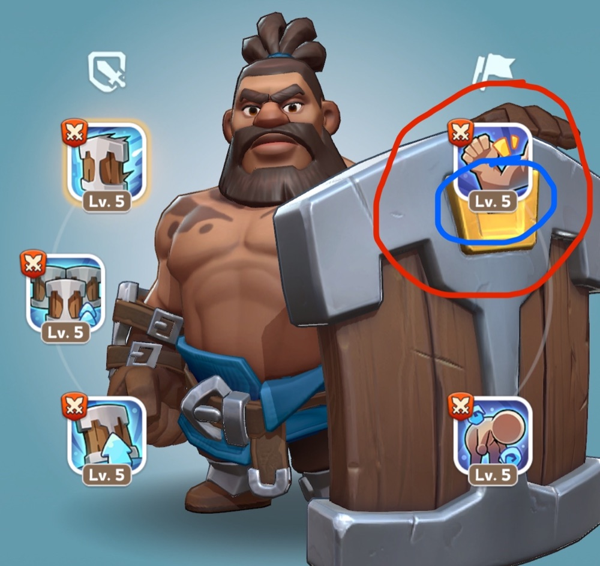

T-3:00
Invasion phase
- If you are staying for the castle, stay out of fights.
- Snipe anyone unreinforced, then move straight away so you do not get caught.
Hold it two and a half hours without a break and it ends there. Otherwise it comes down to who held it longest, counted per alliance.
If you only read one part of this page, read this bit. Everything after it is detail.
If three of our alliances hold it for 70, 60 and 50 minutes, we still lose to one alliance that held it for 75. So WPK will be the one sitting in the castle, and everyone else supports that.
Losses at the castle and turrets go to your infirmary. Attacking someone's base kills about 35% of your own casualties permanently, which is why we would rather they came at us.
The plan is not to go out and burn everyone. It is to make 1907 burn themselves on us. If you do want to hit their cities, know your own limits from Swordland first, because that 35% comes out of your troops.
Field Triage gives most of it back after the battle, so there is no need to hold troops back.
Once it is full, roughly 30% of anything after that dies permanently. Heal in small batches the whole way through. Set the slider to around 30 minutes, hit heal, ask for alliance help, and repeat. Save your speedups for when you are actually close to filling up.
If you are not sure which one you are, please ask before the window opens.
| You are | You do |
|---|---|
| Rally lead | Launch on the castle when called. KVK weakens them first, WPK lands the one that finishes it. |
| Garrison | Send garrison heroes and troops to the castle or turrets, then keep resending regularly to top your troop capacity back up. Castle garrison should be TG2 or TG3 units only. You are not there to get kills. |
| Joiner | Join with your assigned hero in slot 1. See T05 for which one that is. |
| Alt or farm | Take tiles near the castle with your shield on, act as bait, and call out anything you see. |
| Cannot attend | Skip the castle and go invade instead, do as much damage as you can. |
Keep an eye on chat, or stay in the call if you can, so we can change plan on the fly. We are starting split across the two alliances, but if it looks like we can hold it with the whales together in one, we will move people over and do that instead. Expect to be asked to shift.
Everyone gets up to 90% of their troops back afterwards, so if there is someone you can kill near the castle, or someone marching in from a long way out, go and take them. Just be ready to move straight after, or keep a random teleport handy to get out of trouble. And if you spot an opening, say so in chat. Communication is going to matter as much as anything else on the day.
WPK and KVK are the two alliances for castle battle. Anyone active who reads chat should be in one of them. Please move non readers and inactive accounts to another alliance before the window opens.
| Player | Alliance | Job |
|---|---|---|
| Maven | WPK | Rally lead, then garrisons the castle once we are in |
| Spartan | WPK | Rally lead |
| Whispering | WPK | Rally lead |
| FTH | WPK | Rally lead |
| Tex | KVKFlex | Rally lead, moves between the two alliances as needed |
| BaldKi | KVKFlex | Rally lead, moves between the two alliances as needed |
| Teehee | KVK | Rally lead |
| DrL | KVK | Rally lead |
| Mons | KVK | Rally lead |
KVK and WPK work as a pair on the castle. KVK goes in first to weaken them and WPK lands the hit straight after, so the time lands on WPK's clock. Bigger players should be ready to switch alliance if we call for it, and please say yes quickly, because a swap that lands after the rally is no use. If you are one of the two flexing across, do not switch while you have a march sitting in a rally or garrisoned somewhere, because we do not know yet what that does to the march or to the occupation clock.
You will lose troops for nothing and turn up wounded. Come in with an empty infirmary instead.
Set the castle open time once and every phase switches to your own clock.
They are not there to protect whoever is inside, so while 1907 hold turrets they are firing into our seat. We take them after the castle, not before. In practice they chip away rather than wipe a garrison, and twenty minutes spent collecting turrets is twenty minutes off our clock.
| Turrets | Their garrison takes | We get |
|---|---|---|
| 1 | ~2% a shot | +8% |
| 2 | ~4% a shot | +12%target |
| 3 | ~6% a shot | +15% |
| 4 | ~8% a shot | +20% |
Two is the working target, once the seat is ours. The damage is real but modest, so turrets are worth having to protect the garrison and not worth losing castle time to chase.
A turret starts slow and speeds up to around a shot a minute, taking about 2% of the castle garrison each time. The cheapest thing they can do is send a throwaway march to flip one and reset its clock, so holding the turrets we already have matters more than grabbing extra ones. Keep four people parked next to their turret ready to take it back.
Maven will be holding the castle. This is what everyone else does to make that hold stick.
The game gives the whole garrison its defence bonuses from one player, whichever one has the highest stats. If someone built for attack wanders in, they can take that spot from Maven and make everyone in there worse without anyone noticing. If you are not on the list, reinforce a turret instead.
Teleporting out loses us the castle, which is the whole point of the day. If a rally lands on Maven, reinforce him to the maximum and eat it. That is what everyone parked nearby is there for.
Maven's void buff goes on the TG2 and TG3 joiners who are not rally leads. If 1907's whales want to spend their troops hunting our whales, that is their mistake to make. The joiners are the ones who cannot take those hits, and they are the ones holding the seat together.
Everyone reinforces two other cities, three if you can. You do not need all six marches out in castle battle, so put the spare ones where they keep somebody else alive.
Infantry, cavalry, archers. Do not drop any of them to zero or you waste that type's hero skills. Castle garrison is TG2 or TG3 units only. Keep resending to top your capacity back up as you take losses.
Save both of these before battle day so nobody is dragging sliders around mid rally.
When you join, the only thing that travels is the Expedition skill in the top right of your slot 1 hero, and its level. Nothing else about that hero matters. Only four joiners count at all, and four of the same hero just add together, while four different ones multiply. That is roughly 12% more damage for nothing. Find your group below and set that hero.

Bring these when you join a rally on the castle.
Chenko and Yeonwoo are the same type, so stacking those two together only adds up. Amane is the one that multiplies against them, so a mix of Amane and Chenko beats four of either.
Bring these when you reinforce the castle or a turret.
R4 and R5 will tell you which hero to bring. Do not all bring the same one, that is the whole point.
The garrison stack we want is Hilde, Hilde, Saul, Gordon, or Saul, Saul, Hilde, Gordon. Howard is the next option after those, and Eric is worth a slot once his skill is at level 4 but not below.
Get that skill level as high as you can, because it sets the size of the buff. Maxed skills also take priority for the four slots, so an unmaxed hero can end up skipped. Gear on a joiner does nothing at all, so do not sit out a rally because you think your gear is bad. Strip the gear off your joiner heroes and give it to the rally leads instead.
Two things you will need to do mid fight, so practise them before the day. Both come from the garrison guide.
A maxed hero in the wrong slot holds that slot for the entire fight. You can bump them out without kicking them from the garrison:
They drop to the bottom of the list, which takes them out of the bonus slots and lets the next person in.
Amane is the one damage joiner that multiplies against Chenko and Yeonwoo, so a level 5 Amane is worth more than another Chenko. Work out who has one before the day and make sure those people get into the castle rallies rather than sitting on a turret.
The garrison shows one combined troop ratio for everyone inside it, so it drifts as people take losses and resend. Steer it back toward 60/20/20 by asking named people to resend a specific type. Tap the blue arrow to the right of someone's name to see what they actually brought.
A few things in the original plan turned out to work differently than we thought.
A rally locks the people who joined it, and the defender can pull their garrison march out any time they want. So a fake rally ends up tying up our own people more than theirs. Use throwaway accounts for these.
Bases do not slow enemy marches down, only the relic does that. They do take up tiles though, so filling the ground near the castle still forces them to land further away.
If the castle goes to whichever alliance won the rally, then a KVK rally taking it puts the time on KVK instead of WPK and splits our total in half. So KVK softens them up and WPK finishes it. Worth testing on a turret early on to see how it actually behaves.